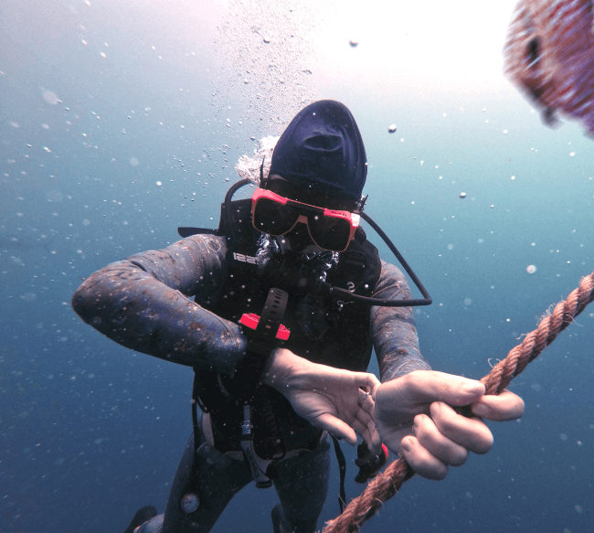
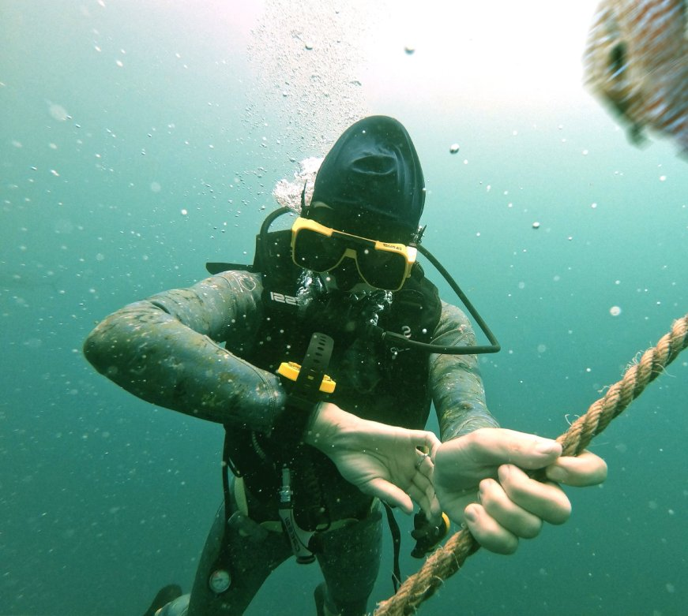
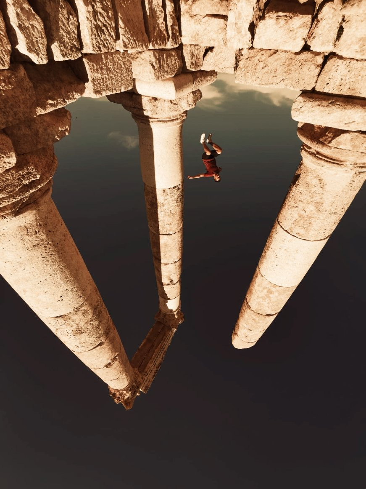

Hem
Bildredigering
Om mig

Dykarens gula utrustning har ändrat färg till röd och bildens gröna färg har minskats

Bilden har vänts upp-och-ner, rödheten i bilden har minskats och mannen som hoppar togs bort

Horisonten har jämnats ut och den röda färgen minskats